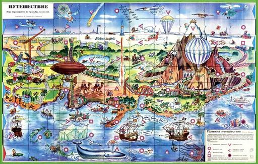
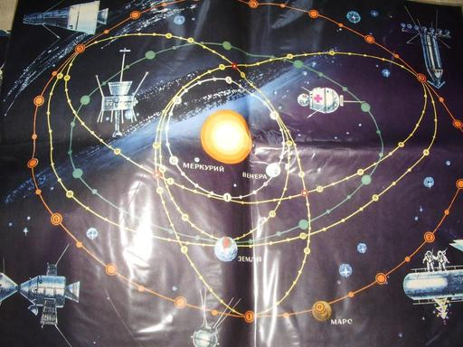
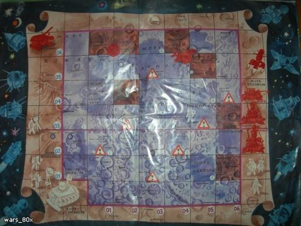

{kind=link}
{kind=link}
{kind=link}
{kind=link}
{kind=link}
{kind=link}
{kind=link}
{kind=link}
{kind=link}

Семейный вечер, приглушенный свет лампы над журнальным столиком, родители передвигают фишки по квадратикам на подклеенной карте. Потом мы с сестрой подросли и сами стали играть. Когда терялись фишки, мы использовали вместо них пуговицы.
Простые, но любимые, игры времен Советского Союза передавались из поколения в поколение. Не у всех они сохранились до сегодняшнего дня. Но те кто эти настольные игры застал, наверняка помнят их до сих пор.
Игры-путешествия издавались как вкладыши в отдельные номера детских журналов. Замечательны тем, что правила к ним, нарисованые прямо на игровом поле, никогда не могли потеряться:
Знакомясь с просторами Родины, игроки путешествуют от одного города до другого, собирая по пути "сувениры". Старт пути - конечно же, Красная площадь.

Скачать карту в разрешении 3118x1984, 6,18 Мб
«Весёлые картинки» - ежемесячный юмористический журнал для детей дошкольного возраста и первоклассников. Орган ЦК ВЛКСМ. Издаётся в Москве с 1956. Тираж (1971) 5,6 млн. экземпляров. На страницах журнала в ярких картинках печатаются сказки, забавные приключения, загадки, игры и пр. «Школа Карандаша» учит детей рисовать, «Школа Самоделкина» - мастерить игрушки, «Весёлая азбука» знакомит ребят с буквами. Ежегодно журнал проводит конкурс на лучший детский рисунок. (из Большой советской энциклопедии)
Скачать карту в разрешении 3131х2000, 3 Мб
Автор «Путешествий», Феликс Шапиро (1879 – 1961) - педагог, лексикограф, создатель первого в СССР иврит-русского словаря. Ф. Шапиро получил традиционное еврейское образование, окончил зубоврачебную школу при Харьковском университете, учился на юридическом факультете Петербургского университета, одновременно преподавал иврит, работал в Обществе для распространения просвещения между евреями в России. С установлением советской власти принял участие в становлении системы советского еврейского образования, а когда эта система была ликвидирована, создал и возглавил детский дом с политехническим образованием «Дом коммуны». (http://www.ourbaku.com)
Игрокам предлагается совершить прогулку по лабиринтам старого замка. Коридоры, лестницы, переходы - немудрено и заблудиться и нужно быть очень внимательным, чтобы найти оттуда выход.
Скачать карточки и правила игры
На даный момент в сети доступна только неотреставрированная копия. По туманным воспоминаниям, игра была на обратной стороне одной из предыдущих игр, вероятнее всего, «Кругосветного путешествия».
Скачать карту в разрешении 3968х2551, 4 Мб
Игра-ходилка с дополнительными сюжетными карточками по мотивам народных сказок с очень удачной стилизацией, автор - пермский филолог Шумов К.Э.
Патриотизм в Советском Союзе воспитывался с раннего детства: любовь к отечеству, гордость за его прошлое и настоящее, стремление защищать свой народ и готовность подчинить свои интересы интересам Родины.
Игра создана по мотивам «Сказки о Военной тайне, о Мальчише-Кибальчише и его твёрдом слове» Аркадия Гайдара. Путь Кибальчиша нарисован на игровом поле, а разные события из сказки, которые с ним происходят на этом пути - в специальной книжке.
Тренировочная группа юных разведчиков соревнуется в успешном сборе важных донесений. "Проигравших в нашей игре не бывает! Чем чаще вы в нее будете играть, тем больше у вас будет накапливаться знаний, необходимых каждому юнармейцу." (из правил к игре)
В Советское время настольные игры, как и вся остальная печатная продукция, подлежали цензуре Главлита - Главного управления по делам литературы и издательств. Потому они обязаны были быть воспитательными и идейно правильными. Фактически, сюжет большинства игр был красивой социальной рекламой о том, как стать достойным гражданином своей страны.
Главная детская мечта мальчишек советской эпохи - стать космонавтом. Полететь, как Юра Гагарин, в открытый космос, навстречу неизведанному. В космонавты брали не всех, но с такой игрой попробовать себя в этом качестве мог любой. Разве нарисованные звезды хуже настоящих в детских фантазиях?

Каждый участник игры должен представить себя капитаном самого совершенного корабля будущего и принять участие в спасательной экспедиции в космосе, попутно справляясь с разными проишествиями, которые выпадают по игровым карточкам.

Правила 1
Правила 2
Правила 3
Правила 4
Игроки - капитаны рыболовецких сейнеров - должны не просто довести свои корабли до рыбокомбината, но и наловить по дороге не менее 30-ти тонн свежей рыбы!
Выигрывает тот, кто первым соберет все яблоки со своей яблони. И никакого злого сторожа, стреляющего солью по мягким местам юных садоводов.
Точное название неизвестно, предположительно, цель игры была быстрее всех разнести свою почту, выбирая разные маршруты на карте и пользуясь общественным транспортом. К игре прилагались фишки двух видов: фишки почтальонов разных цветов и тех же цветов фишки для обозначения адресов, куда следовало отнести почту. Ходить можно было на одну клетку за ход или на одну остановку общественного транспорта, если ты стоял на остановке, переходить улицу только в местах со светофорами.
Мировая история таит в себе неисчислимое количество интересных игровых сюжетов. К сожалению, в Советском Союзе было нелегко опубликовать игру о других эпохах и временах, какой бы хорошей она ни была. Три последующих игры были созданы Владимиром Голицыным в 1930-х годах, но издания не дождались. Публиковались один-единственный раз в разных номерах журнала "Пионер " в 1989-90 годах:
Действия игры происходят в ХV веке и касаются борьбы между испанскими завоевателями и морскими пиратами за награбленные в Америке сокровища. Задача испанцев - довезти награбленное в порт Кадиса. Задача пиратов - отобрать у испанцев их груз и увезти в одно из своих убежищ.
Для передвижения по карте «Пиратов» используется специальная вертушка, которая «определяет силу и направления ветра». Современный вариант такой вертушки можно смастерить самому из банки для CD :
Скачать карту в разрешении 4270 х 2530, 6,8 Мб
Настольная игра о крепостных крестьянах, которые убежали из Кирилло-Белозерского монастыря, и, после ряда приключений, стали донскими казаками.
Юрьев день - отмечается 26 ноября по старому стилю, по новому стилю приходится на 9 декабря. В этот день происходили расчеты помещиков с нанятыми крестьянами по результатам сбора урожая, то есть на селе заканчивался финансовый год.
В ХV веке крестьяне свободно могли оставить землю, на которой они проживали ранее, и перейти к другому землевладельцу, уплатив прежнему хозяину долги и пошлину за пользование двором и земельным наделом – пожилое, позже переход был разрешен только в течение недели до Юрьева дня и недели после него. В 1581 году эта возможность была вообще исключена, а в России таким образом было установлено крепостное право - отсюда поговорка «Вот тебе, бабушка, и Юрьев день!».
Игра посвящена колониальным войнам в Индийском и Тихом океанах. Пять игроков на кораблях одновременно отправляются из Европы с целью захватить новые колонии раньше конкурентов. Победить в игре нелегко: в морских сражениях можно погибнуть или получить такую пробоину, что приходиться срочно искать ближайший порт для ремонта. А противники в это время не стоят на месте.
Князь Владимир Голицын (1904 – 1941гг.) был отчислен из Высших художественно-технических училищ со словами: «Даже сверхталантливому, но сыну князя – не место в семье советских художников». Спасаясь от репрессий, уехал на Север, где поступил в Плавучий морской научный институт. Работал моряком и связным, был участником первых советских экспедиций в Северном Ледовитом океане, при этом продолжая рисовать. Позже Владимир стал одним из лучших книжных иллюстраторов страны и автором более десятка настольных игр на исторические темы.
Известно, что большинство абстрактных игр являются волшебным средством не только для развития чувства числа, внимания, логического мышления, умения складывать и вычитать целые числа, но еще и тренируют ряд личных качеств, к примеру - терпение.
Классика лингвистических настольных игр - к стартовому слову пристраиваются дополнительные буквы, участники могут образовывать все новые и новые слова, за каждое из них назначаются очки.
Игра может дать ответы на самые разные вопросы. Сколько будет 3+2? Какие рыбы водятся в наших реках? Как называются птицы, живущие в наших лесах и парках? Гугл нервно курит...
Электронно-вычислительная машина. Бумажная, правда - но любого ребенка с фантазией это не смущало.
Набор для игры в лото и шашки.
Древняя индийская игра - считается, что она помогает сосредоточиться и тренирует сообразительность. Цель игры - побить максимальное количество фишек путем перешагивания их по вертикали или горизонтали.
Драйв, скорость и автомобили - мечта каждого мальчишки. В эпоху СССР при Домах и Дворцах Пионеров и школьников существовали кружки юных водителей, детские автодороги, автогородки.
Симулятор автомобильного городка, закрепляет знания дорожних знаков и правил дорожнего движения. Учиться безопасному поведению на дорогах никогда не рано.

Кто же откажется стать участником "королевы автоспорта", Формулы-1? А уж тем более, устроить свой собственный домашний чемпионат по кольцевым автогонкам! В этой настольной игре, как и в настоящей Формуле-1, игроки пользуются болидами собственного производства.
Как можно догадаться по надписям, игра была изготовлена в Польше либо в ГДР. Что, однако, не влияло на ощущения юных гонщиков, мчащихся наперегонки друг с другом по извилистой трассе.
Точно так же, как в разгар Великой Депрессии 1934-го года нашла свое место в умах людей игра в "Монополию", во времена Перестройки оказались "к месту" ее клоны. На фоне пустых прилавков, тотального дефицита и инфляции так приятно было почувствовать себя миллионером хотя бы на пару часов.
История «Менеджера» начиналась с резкой критики в прессе. В 1988 году дикой казалась мысль о том, что можно продавать и покупать государственные предприятия, тем более такие именитые, как «Дом Ленинградской Торговли», «Гостиный Двор». Да и сама игра по форме была очень непохожа к привычным в Советском Союзе ходилкам. Но, тем не менее, игра стала очень популярной у игроков совершенно разных возрастов.
Ещё 17 сентября 1988 г. (это официальная дата выпуска игры) создатель «Менеджера» и учредитель фирмы «Петропан» - Панкратов Валерий Васильевич потрясающе точно отразил и растиражировал в игре результаты будущих экономических событий в России: приватизацию, инфляцию, ввод в обращение купюр крупного достоинства.
Резкая критика прессы, вызвав живой интерес к «Менеджеру» у читательской аудитории, подсказала мысль о телевизионной рекламе. Первая реклама игры в России! За всю историю Советского Союза - это был первый случай использования коммерческой рекламы на телевидении. Был сделан первый в России рекламный ролик. Телереклама «Менеджера», прошла по всем каналам ТВ. Успех игры был грандиозный. Вся страна не только узнала о новой игре, но и сразу же стала с увлечением играть. (с официального сайта игры)
Игра создана киевскими любителями (А. Зырянов и др.) на основе разработанной в США игры «Брокер». Как подсказывает название, ход игровой партии имитирует игру на бирже, со всеми соответсвующими атрибутами: акции, контрольный пакет, банкротство, торговые операции.
Описание игры и ссылка для скачивания
Еще один нелицензионный клон американской "Монополии", хотя в то время никто о самой идее лицензирования в Советском Союзе наверняка не задумывался. Игроки стремятся получить максимальную прибыль по вложенному капиталу и одновременно разорить своих конкурентов.
"Было очень интересно заниматься добычей ресурсов, перевозками, прозводством товаров и всё для того, чтобы получить максимальное количество денег — но зато каким образом! Чем больше игроки занимались делом, тем более «цивилизованным» становился рынок и сложнее было получать прибыль. В конечном итоге в СССР наступал оголтелый капитализм, что ли, но в рамках отдельной взятой игры, конечно."
Сейчас трудно поверить в то, что до недавнего времени в Советском Союзе просто не существовало понятия ролевой игры:
Первая ролевая настольная игра, выпущенная в самом конце советской эпохи, когда заграничные веяния все активнее проявлялись в жизни людей. К игровой карте прилагалась сотня карточек с монстрами, такая непохожая на привычные советские игры, и такая похожая на неизвестный тогда ещё “Dungeons & Dragons“, переделкой которой она и являлась
Правила игры и ссылка для скачивания
В магии игроки воюют с темными силами, собирая 12 волшебных амулетов.
"Кощеева цепь" - это книга-игра, в которой сюжет развивается в зависимости решений и поступков читателя, как главного героя всех событий. К книге прилагался восьмигранный кубик с двумя дополнительными гранями: пустой и с изображением кольца.
"Если вы захотите купить что-нибудь из этих волшебных товаров или даже все, то платите деньги и перепишите свои покупки в ваш ЛИЧНЫЙ ЛИСТОК. Теперь можно спокойно обойти базарную площадь и всё осмотреть.
Если хотите, можете поиграть в кости или карты, чтобы пополнить свои денежные запасы. - Переход на 218.
Если возникло желание, можно подойти и поговорить с детьми, играющими на углу площади. - Переход на 190.
Можно подойти к зевакам около показывающего свои фокусы пожирателя огня. - Переход на 210.
Если хотите пересечь площадь и осмотреть кабак при постоялом дворе, вам предстоит переход на 123."
(отрывок из книги)